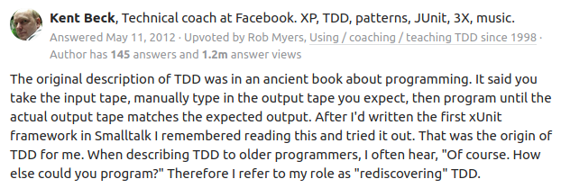
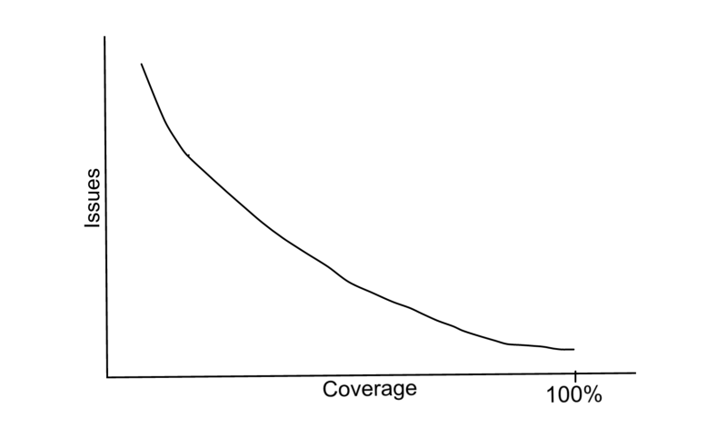
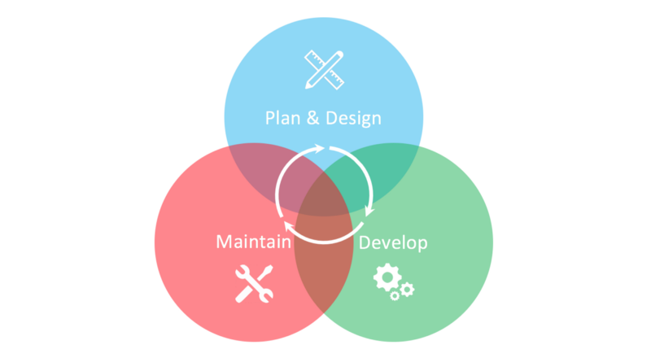
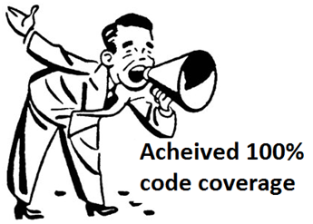

Test Driven Development existed long before the term itself. It’s been “rediscovered” and popularised by Kent Beck, the creator of Extreme Programming. He wrote on Quora:

The complexity of software systems since those ancient times has evolved to a point when it is no longer possible to define the expected application behaviours in as simple terms as “the output tape you expect”.
The software development community is split, with opinions ranging from “TDD is dead. Long live testing” (by David Heinemeier Hansson, the creator of Ruby on Rails and the founder & CTO of Basecamp):
Test-first fundamentalism is like abstinence-only sex ed: An unrealistic, ineffective morality campaign for self-loathing and shaming.
to “What’s Wrong with Test-Driven Development (TDD)”:
[TDD] is a powerful methodology that helped me combat “analysis paralysis”, create robust, maintainable code and there’s the added benefit of the resulting unit tests which provide a safety-net against regression bugs.
The latter one says that TDD is nearly perfect, we are simply doing it wrong, being scared to leave our comfort zones and to watch our tests fail… I wish it were as simple as that.
Really, why?
There is also no consensus about how software should be designed, even among developers who preach and practice TDD. Some moderate believers say that TDD is NOT “Test Driven Design”, that it should be used together with Domain Driven Design and call for reformation into TDD 2.0. Zealots insist that “TDD is a design methodology - the unit tests are just a by-product of the process”.
Ok, let’s step back from the heat of the battle and ask ourselves what objectives we want to achieve, with or without TDD?
At a high level, software developers in both camps want to have lower costs of creating and using software. It means:
- Reducing the number of bugs
- Making changes with minimal regressions
- Releasing changes with lower risk of failures
- Maintaining code easily and running tests quickly
- etc.
We definitely need team-wide processes for the development project success. Uncle Bob writes that if only a part of the team does TDD and another one doesn’t it will lead to divorce. But do we really need an industry-wide standard development process to achieve those objectives?
Software development projects are as diverse as businesses. As the complexity of the businesses was growing they in many cases transitioned from process management to management by objectives.
So what metrics in software development should we manage to achieve a higher level objective of reducing the costs?
I can see a strong inverse correlation between number of costly issues (bugs, regressions) and code coverage. That’s exactly the reason why a majority of popular open-source projects display this metric. A higher code coverage is usually seen as a higher reliability of the code, both by developers who follow TDD and those who don’t.

My development process aims to achieve an effective design and high code coverage. It could be called Coverage Driven Development and consists of three phases:
1. Plan & Design
I make a list of features and requirements for a both minimal and viable implementation that can be given to the end-users. The plan allows to foresee external dependencies and all requirements that the application should satisfy, and the design should be coordinated with this plan.
At this point there are no (or very few) external constraints to help structure the code. So I quickly iterate code to figure out how basic models, APIs, functions and classes should look. I am not worried if my code even works, and I usually don’t write tests during this phase, they only hinder the understanding of what the right design is.
Iterating code allows to avoid unnecessary intermediary abstractions that often plague TDD-written code and achieves a robust foundation of code structure. And it helps to transfer a visual image of the system that only exists in the the sketches or in the mind into the code and see if this picture still makes sense and whether it supports the whole plan. If it does, I go to the next phase, in not - I continue iterating the code until it does. Depending on the complexity of the system this phase can take from a couple of hours to a couple of days, or even weeks in a really big project.
2. Develop
Before development continues, I write tests for all the code written in design phase to achieve code coverage of 95%+.
Each feature in the plan (that continues to evolve) requires some design thinking so I continue rapid code iteration and refactoring and in most cases I write tests only after code, getting to 95%+ code coverage before going to the next feature.
Depending on your quality requirements and the code size you can set a higher threshold for code coverage in your project, but the cost or writing and maintaining the tests grows very quickly as you approach 100%.
3. Maintain
This phase starts long before MVP is complete. In case when bugs are discovered or some simple changes should be made I almost always write a failing test BEFORE writing any code, exactly as TDD instructs. In this phase it just makes more sense. During the implementation of the fix I often discover some other issues and do some refactoring, but I don’t always write tests for them as I fix them - switching context damages focus and speed. Once the implementation is done I write additional tests to maintain code coverage at 95%+ level.

This is not a linear process, it is a cycle that repeats multiple times, even before the application reaches the end-users. Also these phases are not strictly separated in time, they are more like “modes of operation” that can overlap.
The whole development process is driven by a single objective quality metric - code coverage. Uncle Bob sees TDD as a pre-requisite to achieving high code coverage (see “Is TDD Dead?”). But it’s not the case, you can maintain high code coverage without practicing TDD all the time.
You just need to follow several simple steps:
- Implement code coverage measurement as early as possible.
- Make the measurement run on every build.
- Make coverage visible in your source code repository.
- Make coverage change visible in PRs.
- Only merge PRs if they increase the coverage or if it is already higher than the threshold agreed with the team for the project.
Code coverage as a metric is not perfect, and I often hear the following criticism:
- “It depends on code style”. It is true, but it does not reduce the efficiency of code coverage as quality metric. Adopting consistent code style for the team makes code coverage measurement consistent as well.
- “100% coverage does not guarantee the absence of bugs”. It is also true, but neither does following TDD. No sufficiently complex system is free of bugs. While the absence of bugs is theoretically possible to achieve, and even possible to prove in some cases, it is prohibitively expensive. On the other hand maintaining high code coverage dramatically reduces the number of bugs and the probability of regressions.
If you are not using code coverage as part of your development process, it’s definitely worth trying. If nothing else, it will give you an increased satisfaction from writing tests. And all developers seem to agree that we should write tests to reduce the cost of software.
